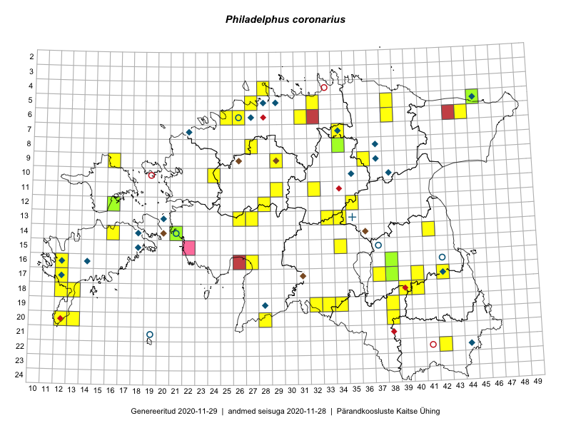

Philadelphus coronarius
Uuendatud: 2016-12-07
Kaardile koondatud taksonid: Philadelphus coronarius L.

Kaart põhineb 63 kirjel, neist vaatlusi 61 ja eksemplare 2. Taksonit on leitud 39 ruudust.
| Ruut | Vaatleja(d) | Vaatlusaeg | Kirje tüüp | Viide andmebaasikirjele |
|---|---|---|---|---|
| 12-28 | Tiit Hallikma, Toomas Kukk, Indrek Tammekänd | 2015-06-09 | ruut/ala | vaata PlutoFis |
| 09-16 | Peedu Saar, Toomas Kukk | 2015-05-27 | ruut/ala | vaata PlutoFis |
| 13-26 | Toomas Kukk, Thea Kull, Timo Luhamäe, Ott Luuk, Peedu Saar | 2015-06-28 | punkt | vaata PlutoFis |
| 13-27 | Toomas Kukk, Indrek Tammekänd | 2015-05-09 | punkt | vaata PlutoFis |
| 10-24 | Peedu Saar, Toomas Kukk | 2015-05-26 | ruut/ala | vaata PlutoFis |
| 12-28 | Tiit Hallikma, Indrek Tammekänd, Toomas Kukk | 2015-06-09 | punkt | vaata PlutoFis |
| 06-44 | Peedu Saar, Liina Oja | 2015-07-21 | punkt | vaata PlutoFis |
| 13-33 | Toomas Kukk, Indrek Tammekänd | 2015-05-10 | ruut/ala | vaata PlutoFis |
| 13-33 | Toomas Kukk, Indrek Tammekänd | 2015-05-10 | punkt | vaata PlutoFis |
| 13-34 | Toomas Kukk, Indrek Tammekänd | 2015-05-10 | punkt | vaata PlutoFis |
| 06-38 | Toomas Kukk, Raivo Kalle | 2015-05-13 | ruut/ala | vaata PlutoFis |
| 06-38 | Toomas Kukk, Raivo Kalle | 2015-05-13 | punkt | vaata PlutoFis |
| 06-44 | Peedu Saar, Liina Oja | 2015-07-21 | ruut/ala | vaata PlutoFis |
| 18-40 | Malle Leht | 2015-07-25 | ruut/ala | vaata PlutoFis |
| 11-29 | Toomas Kukk, Tiit Hallikma | 2015-06-11 | ruut/ala | vaata PlutoFis |
| 12-35 | Toomas Kukk, Tiit Hallikma | 2015-06-12 | ruut/ala | vaata PlutoFis |
| 10-24 | Toomas Kukk, Peedu Saar | 2015-05-26 | punkt | vaata PlutoFis |
| 09-16 | Toomas Kukk, Peedu Saar | 2015-05-27 | punkt | vaata PlutoFis |
| 06-31 | Rein Kalamees, Kersti Püssa | 2015-06-01 | ruut/ala | vaata PlutoFis |
| 11-29 | Tiit Hallikma, Toomas Kukk | 2015-06-11 | punkt | vaata PlutoFis |
| 05-38 | Rein Kalamees, Kersti Püssa | 2015-05-29 | ruut/ala | vaata PlutoFis |
| 05-38 | Rein Kalamees, Kersti Püssa | 2015-05-29 | punkt | vaata PlutoFis |
| 05-38 | Rein Kalamees, Kersti Püssa | 2015-05-29 | punkt | vaata PlutoFis |
| 05-38 | Rein Kalamees, Kersti Püssa | 2015-05-29 | punkt | vaata PlutoFis |
| 14-16 | Meeli Mesipuu | 2015-07-10 | punkt | vaata PlutoFis |
| 07-34 | Jana-Maria Habicht, Ester Valdvee | 2015-07-20 | ruut/ala | vaata PlutoFis |
| 14-41 | Ott Luuk, Peedu Saar | 2015-06-21 | punkt | vaata PlutoFis |
| 15-34 | Maria Abakumova, Helle Mäemets | 2015-07-30 | ruut/ala | vaata PlutoFis |
| 19-38 | Eeva-Maria Jeletsky, Tarmo Niitla | 2015-08-12 | punkt | vaata PlutoFis |
| 19-38 | Eeva-Maria Jeletsky, Tarmo Niitla | 2015-08-12 | ruut/ala | vaata PlutoFis |
| 20-38 | Eeva-Maria Jeletsky, Tarmo Niitla | 2015-08-11 | punkt | vaata PlutoFis |
| 07-34 | Jana-Maria Habicht, Ester Valdvee | 2015-07-20 | punkt | vaata PlutoFis |
| 20-38 | Eeva-Maria Jeletsky, Tarmo Niitla | 2015-08-11 | ruut/ala | vaata PlutoFis |
| 17-12 | Mari Reitalu | 2015-08-25 | ruut/ala | vaata PlutoFis |
| 19-32 | Maria Abakumova, Tiit Hallikma | 2015-07-11 | ruut/ala | vaata PlutoFis |
| 20-28 | Indrek Tammekänd | 2015-05-16 | punkt | vaata PlutoFis |
| 22-42 | Karin Kikas, Elle Rajandu | 2015-05-25 | punkt | vaata PlutoFis |
| 18-12 | Mari Reitalu, Sirje Azarov, Oliver Parrest | 2015-08-02 | ruut/ala | vaata PlutoFis |
| 19-32 | Maria Abakumova, Tiit Hallikma | 2015-07-11 | punkt | vaata PlutoFis |
| 20-12 | Triin Reitalu, Sirje Azarov | 2015-05-30 | ruut/ala | vaata PlutoFis |
| 20-12 | Triin Reitalu | 2015-05-30 | punkt | vaata PlutoFis |
| 18-13 | Mari Reitalu, Oliver Parrest | 2015-05-27 | ruut/ala | vaata PlutoFis |
| 17-42 | Kirsi Loide, Marje Loide | 2015-07-27 | ruut/ala | vaata PlutoFis |
| 15-34 | Maria Abakumova, Helle Mäemets | 2015-07-30 | punkt | vaata PlutoFis |
| 20-12 | Oliver Parrest | 2015-08-15 | ruut/ala | vaata PlutoFis |
| 20-13 | Oliver Parrest | 2015-08-15 | ruut/ala | vaata PlutoFis |
| 06-26 | Mari Metsoja, Jaak-Albert Metsoja | 2015-05-24 | ruut/ala | vaata PlutoFis |
| 18-13 | Oliver Parrest | 2015-07-15 | ruut/ala | vaata PlutoFis |
| 18-13 | Oliver Parrest, Mari Reitalu | 2015-05-27 | punkt | vaata PlutoFis |
| 18-12 | Oliver Parrest, Mari Reitalu, Sirje Azarov | 2015-08-02 | punkt | vaata PlutoFis |
| 05-32 | Rein Kalamees | 2016-05-07 | ruut/ala | vaata PlutoFis |
| 18-40 | Tiit Hallikma, Toomas Kukk | 2016-06-13 | punkt | vaata PlutoFis |
| 06-25 | Toomas Kukk, Sander Laherand | 2016-07-05 | ruut/ala | vaata PlutoFis |
| 09-29 | Toomas Kukk, Sander Laherand | 2016-07-06 | ruut/ala | vaata PlutoFis |
| 09-29 | Sander Laherand, Toomas Kukk | 2016-07-06 | punkt | vaata PlutoFis |
| 06-25 | Sander Laherand, Toomas Kukk | 2016-07-05 | punkt | vaata PlutoFis |
| 11-32 | Aat Sarv, Jaak-Albert Metsoja | 2016-07-21 | ruut/ala | vaata PlutoFis |
| 11-32 | Aat Sarv, Jaak-Albert Metsoja | 2016-07-21 | punkt | vaata PlutoFis |
| 19-33 | Liina Oja, Elle Rajandu | 2016-07-18 | punkt | vaata PlutoFis |
| 16-27 | Tiit Hallikma, Tõnu Ploompuu | 2016-07-20 | punkt | vaata PlutoFis |
| 04-28 | Tiina Elvisto | 2015-08-09 | ruut/ala | vaata PlutoFis |
| 14-21 | Peedu Saar | 2015-06-27 | eksemplar | vaata PlutoFis |
| 16-38 | Peedu Saar, Meeli Mesipuu | 2015-05-05 | eksemplar | vaata PlutoFis |